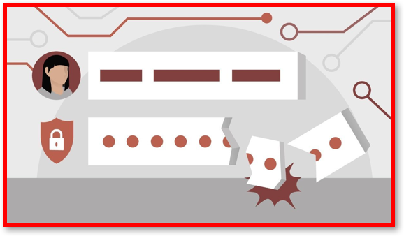
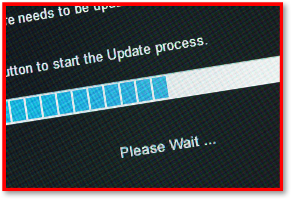

3.6.1 Cyber Security Threats
Table of Contents
- 1. Cyber Security Threats
- Learn It: What is Cyber Security?
- Learn It: Cyber Security Threats
- Try It: Removable Media
- Learn It: Weak and Default Passwords
- Learn It: Misconfigured Access Rights
- Learn It: Unpatched or Outdated Software
- Learn It: Social Engineering
- Learn It: Malicious Code
- Try It: Malware
- Learn It: Penetration Testing
- Try It: Penetration Testing
- Badge It: Exam Questions
- Badge It: Exam Questions
- Badge It: Exam Questions
1 Cyber Security Threats
Learn It: What is Cyber Security?
Cyber Security – The use of technology, working practices, processes and precautions designed to protect networks, computers, programs and data from attack, damage or unauthorised access.
- Cyber Security is defines as the
protection of computer systems,networksanddatafrom criminal activity. - Cybercrime can take
many forms, including plantingviruses, acquiring and using personal orconfidential dataanddisruptinga website or service. - Vulnerability of a computer network is often due to a
flawed systemwhich isopentoattack. An attacker orhackercan thenexploitthisweakness. - Human error is one of the
biggest issuesinsecurity breaches. For example, in 2010 GCHQ lost 35 laptops with all thesecurity datastored on these devices; there are numerous other cases of where government officials have left USB Memory sticks and/or other electronic devices on public transport.
Learn It: Cyber Security Threats
Removable Media
- Removable media such as memory sticks, memory cards and removable hard drives, can present two major threats:
Data TheftandVirus Infection. - Any storage device that is
highly portablecan easily beusedto steal, corrupt, destroy, delete, hack or steal data or introduce malware onto a computer/network system. - An example of an issue that could occur when using removable media, is when students has a
copyof theirschool workon a memory stick which theytake hometo use in their own computer. If theircomputerdoes not have adequatevirus protectionthen their memory stick coud becomeinfected, and ifused at schoolcouldinfectthe whole school network.
Try It: Removable Media
- Q1: Suppose that you found an USB Memory stick, what are the risks of using this unidentified memory stick in your computer?
Learn It: Weak and Default Passwords
Weak and Default Passwords
- Password strength is a measure of the
effectivenessof a password against guessing or brute-force attacks. - In its usual form, it estimates
how manytries an attacker who does not have direct access to the password would need, on average, to guess it correctly. Thestrengthof a password is a function of length, complexity,/ and /unpredictability. - Using strong passwords
lowersoverallriskof asecurity breach, but strong passwordsdo not replacethe need for other effective security controls. - Passwords
should containa combination of upper and lower-case letters as well as numbers and symbols. (E.G. $tROng p@s$worDs). - Simarly, default passwords can be a problem. For example, a router's new owner might
not changethe default password from *'admin'* or *'password'* when they buy it.Thedefault passwordis usually found in theinstruction manualor on the device itself. - Leaving a
default passwordis one of themajor factorsin compromising the security of a system.
Learn It: Misconfigured Access Rights

- Access Rights are the
rulesthat tell a computer system which user should haveaccessto whichfilesandother resources. - When user accounts have
incorrect permissions, this can cause big problems as people who are lower down the chain of command couldhave accessto private information that managers could have. They couldwronglyhaveaccessto employee records or customer data. - In a school or business,
usernamesareusedto identify the access rights of each user. - Each user is
assignedindividualaccess rights, according to their role, and it is important that these should be correctly set. - For example, most
network usersshould not have access to thesetupandconfiguration, as a hacker who gains access to the user's computer could then cause damage. - Access rights can also be
appliedtoindiviual files. This means that specific files stored in an area to which full access is normally allowed, can still be givenrestrictionssuch as being maderead-only.
Learn It: Unpatched or Outdated Software
Unpatched or Outdated Software 
- Unpatched Software - When a security risk is identified in a program, the
developerwill release apatch, which is an add-on program thatfixesthesecurity risk. If a userdoes notinstall the patch, their computer is not secure. - Based on a sample size of 163 million computers,
55%ofallprograms installed on personal computers running Windows areoutdatedaccording to a recent report, exposing their users to security risks because ofunpatched vulnerabilities. - The top most out-of-date Windows programs installed on PCs around the world shows that in more than
94% of cases, users who have installed Adobe Shockwave, VLC Media Player, and Skype on their computershaven't updatedthem to the latest versions. - Out-of-date Microsoft Office programs are another category of applications which put their users at risk, especially given that
15% of all Office installationsare Enterprise 2007, an Office version Microsoft has stopped supporting since 2017 which means that ithasn't receivedany bug fixes or security patches for almost two years. - Threats will often exist in combination. A
usernameacquired viaphishingcould be used in collaboration with aweak, easy-to-guess passwordto introduce avirusthat specifically seeks outunpatched software. - Other cyber security threats including * social engineering* and malicious code and will be covered in detail with the next topic.
Learn It: Social Engineering
Social Engineering - Summary (This is covered in detail in 3.6.2 - Social Engineering)
Peopleare often theweakest pointin security systems, social engineering focuses on people rather than on technology, as the weak point in any security system. There are many different ways tomanipulatepeople tosurrendertheir confidential information or data.
Social Engineering includes the following techniques:
- Blagging.
- Phishing.
- Pharming.
- Shouldering (Shoulder Surfing).
Learn It: Malicious Code
Malicious Code - Summary (This is covered in detail in 3.6.2 - Social Enginnering)
- Malicious code is the term used to describe any
codein any part of asoftware systemorscriptthat isintendedtocauseundesired effects, security breaches or damage to a system. - Malicious code is an
application security threatthat cannot be efficiently controlled by conventional antivirus software alone.
Malware - Is a term used to describe a variety of hostile or instrusive programs or software. Viruses, Spyware, Adware and Trojans are all types of malware, although there are others.
Malware includes the following:
- Viruses.
- Spyware.
- Adware.
- Trojans.
Try It: Malware
- Q2: Can a CD or DVD containing games software, bought new from a reputable retailer, contain a virus? Why is this unlikely?
Learn It: Penetration Testing
 What is penetration testing?
What is penetration testing?
- Penetration Testing is used to find any
security weaknessesin a system. It is the process ofattemptingto gain access to resources without knowledge of usernames, passwords and other normal means of access. - Penetration testing is also called
pen testingorethical hacking, is the practice of testing a computer system, network or web application to findsecurity vulnerabilitiesthat ahackercouldexploit. - Penetration testing can be
automatedwith software applications orperformed manually.
- The strategy is to:
- Gather information about the target of possible attacks.
- Identify possible entry points.
- Attempt to break in.
- Report back the findings.
Black-box Penetration Test
- The
aimofblack-box pentration testingis tosimulatean external hacking or cyber warfare attack. - Testers are
given very littleorno informationabout the network prior to the test. The test could target email servers, web servers or firewalls. - The objective is to find out:
- Whether a hacker can get in.
- How far they can get.
- What they can do on the system.
White-box Penetration Test
- The
aim of white-box penetration testingis tosimulateamalicious insiderwho has knowledge of and possibly basic credentials for thetarget system. - Testers are given
basic informationabout the network in advance of the testing. This could include IP addresses, network protocols and even passwords. - It puts the tester in the
positionofan insider, to determine how much damage a disgruntled or dishonest employee could cause.
Try It: Penetration Testing
- Q3: Name some possible weaknesses or vulnerablities that (a) a black-box penetration test and (b) a white-box penetration test might identify?
Badge It: Exam Questions
Silver - Answer the following questions:
- Define the term Cyber Security? (2 Marks)
- Explain why removable media can be a threat to the security of a network? (2 Marks)
Upload to Fundamentals of Cyber Security - Cyber Security Threats: Silver on BourneToLearn
Badge It: Exam Questions
Gold - Answer the following questions:
- The school network adminstrator notices that a lot of network user's haven't changed their default password or have chosen a weak password.
- a) Explain why this is a problem? (2 Marks)
- b) Suggest two requirements that could be imposed on passwords to ensure that they are strong? (2 Marks)
Upload to Fundamentals of Cyber Security - Cyber Security Threats: Gold on BourneToLearn
Badge It: Exam Questions
Platinum - Answer the following questions:
- A mail-order company stores thousands of customers' details, including debit and credit card details, on its computer network. The company is concerned about the security of this information.
- a) Explain three measures that the company could take to prevent unauthorised access to their computer system? (3 Marks)
- b) Describe a measure that the company could take to prevent employees from accessing information that they are not permitted to view? (2 Marks)
- c) Explain how penetration testing can assist the company in improving its security? (3 Marks)
Upload to Fundamentals of Cyber Security - Cyber Security Threats: Platinum on BourneToLearn